20. Inter-Object Data Definition (Contact)
20.1. Contact relation
20.2. Inter - Object Relation Tools
Inter Object data definition page is as shown in Fig. 20.1.
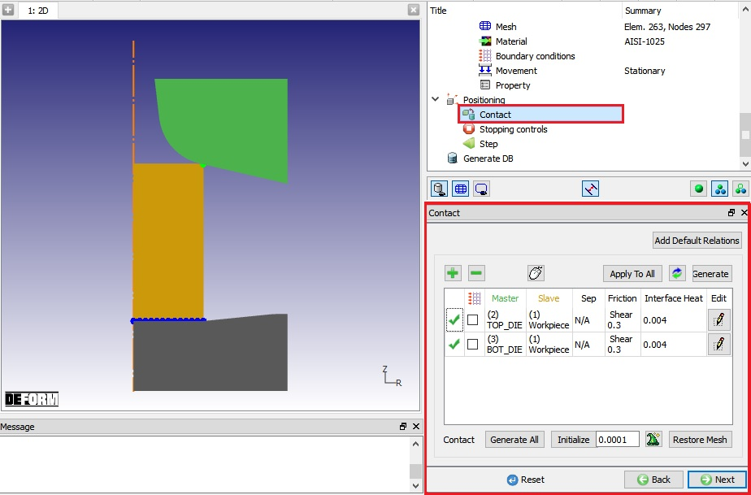
(a) 2D Page
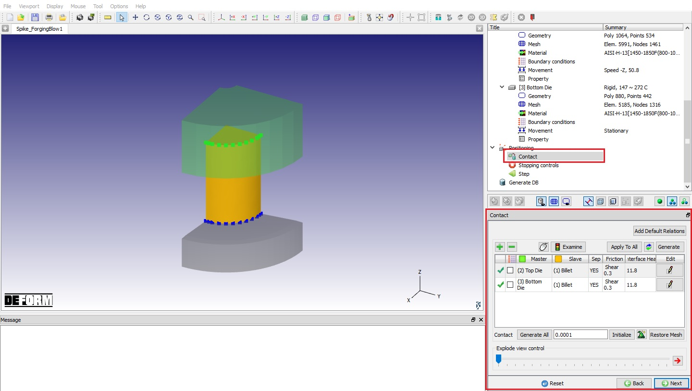
(b) 3D page
Inter Object Data Definition window
The purpose of inter-object relations is to define how the different objects in a simulation interact with each other. The relations table shows the current inter object relations that have been defined. All objects which may come in contact with each
other through the course of the simulation must have a contact relation defined. This includes an object having a relationship to itself if self-contact occurs. It is very important to define these relationships correctly for a simulation to model
a forming process accurately. The critical variables to be defined between contacting objects are:
Also covered in the inter object controls is generation of inter-object boundary conditions.
Inter-Object relations define what objects can contact each other, and how contacted objects will behave while in contact. Contact relations, Inter-Object boundary conditions, Friction and Heat transfer relations are set here for each object pair (See
Fig. 20.1.). Simply speaking, the procedure for defining Inter-Object relations is done in the following steps.
-
Define the master-slave combination – In the case of a single deforming object, the deforming object should be the slave object always. In the case of multiple deforming bodies, the object with the finer mesh at the interface of the two objects
should be the slave object.
-
Define the parameter for the given master-slave pair – This can be done by clicking the Edit button and setting the appropriate parameters . (See Fig. 20.2. and Fig. 20.3.)
-
Generate the contact for all the objects – First click the icon and then click the  button to generate
contact. If contact is not generated where expected check following:
button to generate
contact. If contact is not generated where expected check following:
-
The orientation of geometry of the rigid objects. Make sure that the geometry is shaded on the inside of the rigid objects.
-
The mesh in the region of contact. If the mesh is coarse, there may be no nodes in proximity to gain contact.
-
Make sure that the parts are actually within proximity of each other.
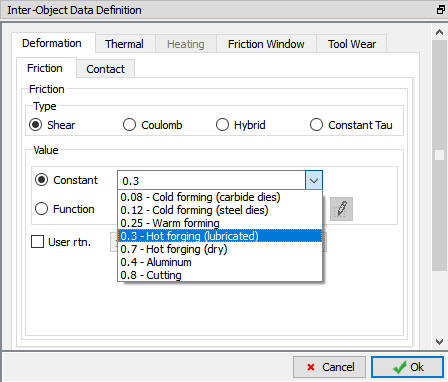
Inter object constant Shear Friction options for 2D
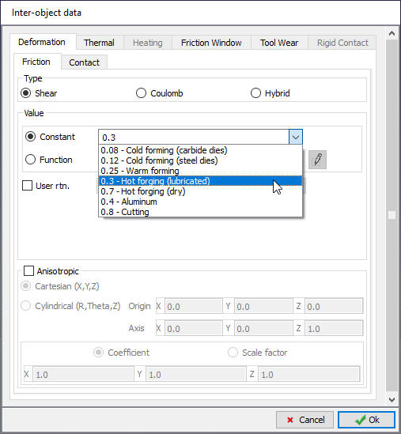
Inter object constant Shear Friction options for 3D
Contact relation (CNTACT)
[2D, 3D]: The contact relation (CNTACT) parameter is used to set the Master/Slave relationship between workpiece, dies, and deformable bodies. The Slave object should be the object
with the finer mesh. In the case of two objects consisting of the same material, either can be the slave although the object expected to elastically deform the most should be defined as the slave. Setting a ``No Contact'' relation causes the
objects to be invisible to each other and allows them to pass through each other uninhibited.
CNTACT should be specified for every pair of deformable objects that may contact each other during the simulation.
Note:
When a node from one deformable object contacts the surface of another deformable object, a relationship between the two objects must be established to keep the objects from penetrating each other. This relationship is referred to as a master-slave
or slave-master relationship. When two objects are contacting each other, the contact nodes move with the master surface as long as the two objects are in contact. The slave nodes are considered to be in contact with the master object as long as the
nodal forces indicate a compressive state. When a slave node develops a tensile force, the node is considered to have separated from the master object.
Inter - Object Relation Tools
Add Default Relations [2D, 3D]: By clicking on this option default contact relations will be added to Contact relation list.
Add relationship  [2D, 3D]: By clicking on this option new contact relationship will be added to list
[2D, 3D]: By clicking on this option new contact relationship will be added to list
Delete relationship  [2D, 3D]: By clicking on this option selected contact relationship will be deleted from list.
[2D, 3D]: By clicking on this option selected contact relationship will be deleted from list.
Picking [2D, 3D]: By clicking on this option user can pick object to be a master or slave object.
Apply to All [2D, 3D]: By clicking on this button selected relation conditions like Friction and Interface Heat will be applied to all the
defined objects relations.
Swap [2D, 3D]: By clicking on this button It will exchange the master and Slave object. Master will become Slave and Slave will become Master.
Generate [2D,3D]: By clicking on this option contact is generated only for the selected object relation.
Sticking Condition [2D, 3D]: Sticking boundary conditions prevent sliding or separation between the selected object pair.
Edit  [2D, 3D]: By clicking on edit button user can define the friction and Interface Heat relations.
[2D, 3D]: By clicking on edit button user can define the friction and Interface Heat relations.
Generate All [2D, 3D]: By clicking on this option contact is generated for all the defined object relations.
Initialize [2D, 3D]: By clicking on this option user can initialize the defined contacts.
Restore Mesh [2D, 3D]: Restore the mesh that was present prior to entering the Inter-object dialog
Tolerance  [2D, 3D]: By clicking on this button system uses default tolerance value for contact generation. User can also define the required tolerance value for contact
generation in tolerance tab.
[2D, 3D]: By clicking on this button system uses default tolerance value for contact generation. User can also define the required tolerance value for contact
generation in tolerance tab.
Examine
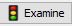
[3D]: From V14.0, user can use the Examine option to review the contacts defined in the inter-object relations page and observe the objects in exploded view.
By clicking on this button, a window will be opened as shown in the Fig. 20.4. In this page, we can observe the contact
relation of each object defined in the contact table. When the contact relations are not defined in the table, then the Examine page will look like as shown in Fig. 20.5..
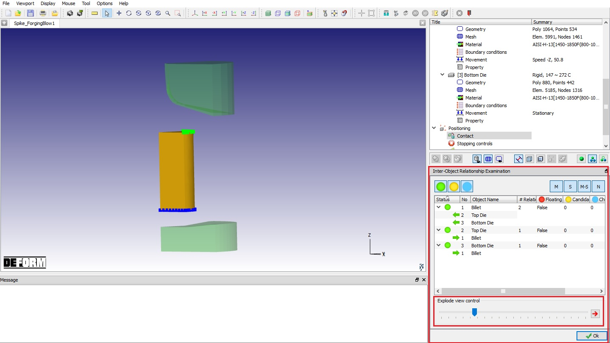
Inter-Object Relationship Examine page
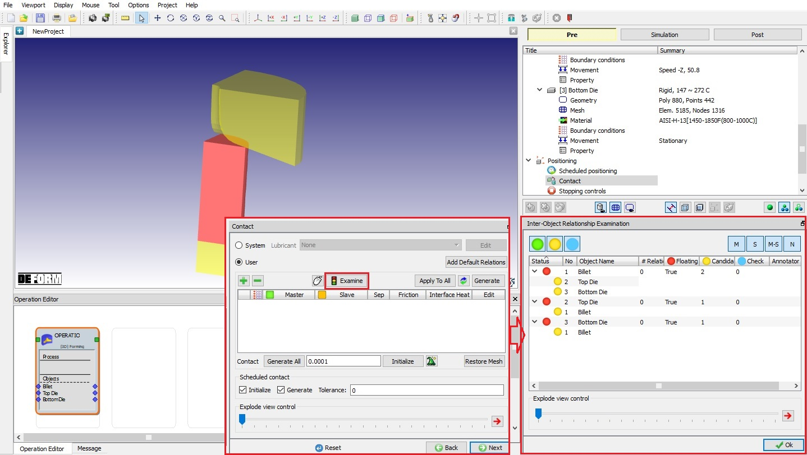
Examine page without any relationship defined
In Examination page, defined contact relation status is assigned with one of the (Green), (Candidate),
(Warning) and (Floating) colors.
-
“” (Good) indicates that contact has been defined with all the objects that it is in contact with in the objects used in the inter-object relations table (see Fig. 20.4.).
-
“” (Candidate) indicates that the object is in contact or may come in contact with one of the objects defined in the inter-object relations table but contact relation is
not defined with the respective object (see Fig. 20.6.) . User then can add relationship with the respective
object if required using right click on the sub object having Candidate color, we will get button to add relationship.
-
“” (Warning) indicates warning to the user that the defined relationship may not be correct as objects are not in contact. When we right click on the sub object having Warning
color, we will get button to remove the relationship.
-
“” (Floating) it indicates that object is a floating object as the object does not have contact relation with any object but is there in the object tree. User can add relationship
in the inter-object table and then use Examine.
In below example, we are trying to add relationship between Billet(object[1]) and Bottom Die(object[3]) from Examine page.
-
Right click on Bottom Die(object[3]) object under Billet(object[1]) object list.
-
Then click on button.
-
In “Add Relationship “popup, we are having “Yes ”, “NO” and “Cancel” buttons. If we click on “Yes “button, then a new relation will be added to the inter-object relation table with Object 3 as Master and Object 1 as Slave. If we
click on “No“ button, then a new relation will be added to the inter-object relation table with Object 3 as Slave and Object 1 as Master. If we click on “Cancel” button, then it will not add any relationship to
the table. (See Fig. 20.6.)
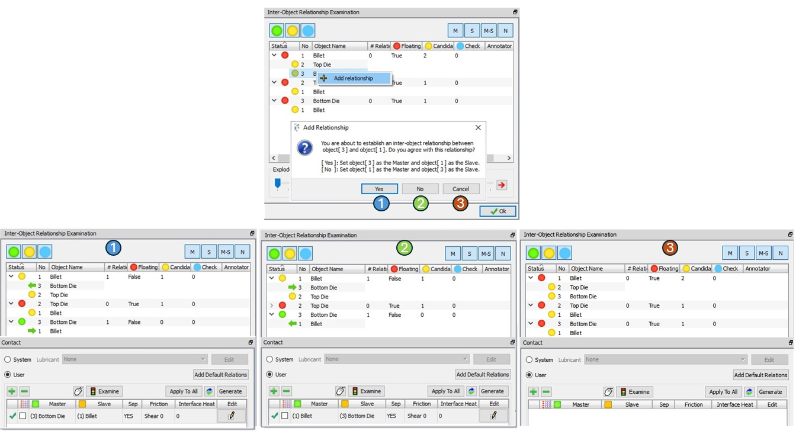
Adding relationship option from Examination page
In the example below, we defined contact relation between “Top die support” (Object[4]) as Master and “Billet” (Object[1]) as Slave. In examine page under Billet object list, we are observing Top die support object with “” indicator as the objects are not in contact and may not come in contact. Now we will try to delete the relationship from the Examination page.
-
Right click on the sub object “Top die support” under Billet object list.
-
Then click on “” button.
-
Click on “Yes” button in Remove Relationship popup.
-
Now the “Top die support” – “Billet” relationship is removed from the inter-object relations list. (See Fig. 20.7.)
-
If we click on “No” button in Remove Relationship popup then there will not be any change to the inter-object relationship table.
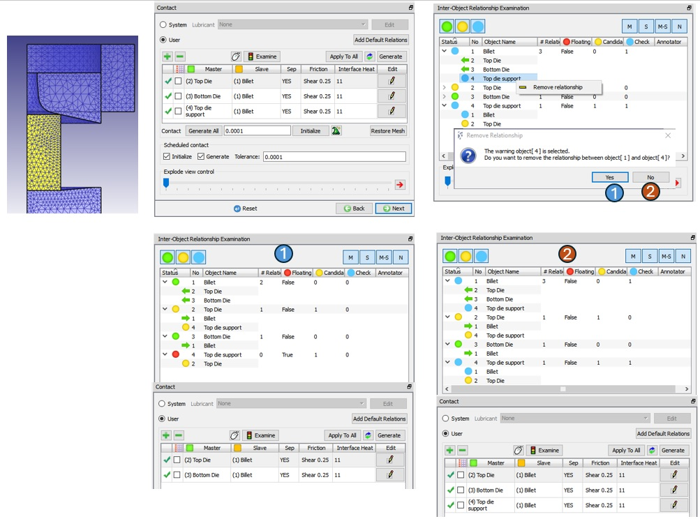
Deleting relationship option from Examination page
Explode view control [3D]: Using this option we can observe the explode view of the objects that are currently displayed in the display region by dragging the sliding bar below the “Explode view control” and also swap the Master-slave
relationship between the objects. As you drag the pointer over the sliding bar the objects will move far from each other in the exploding direction. By turning on button, we
can observe the arrow button on the objects in the direction of its slave objects with which it has contact relation. By clicking on the arrow button in the display area, we can swipe the inter - object relationship.
In the below example. we are observing explode view of 3D Spike example with arrow display. When we click on button, we can observe that the red arrows are displaying at the Top
die and Bottom Die and the arrow directions are towards Billet object. Now click on the arrow of the Top die, we will be getting “Swap inter-Object Relationship” popup, click on “Yes button” as shown in Fig. 20.8.
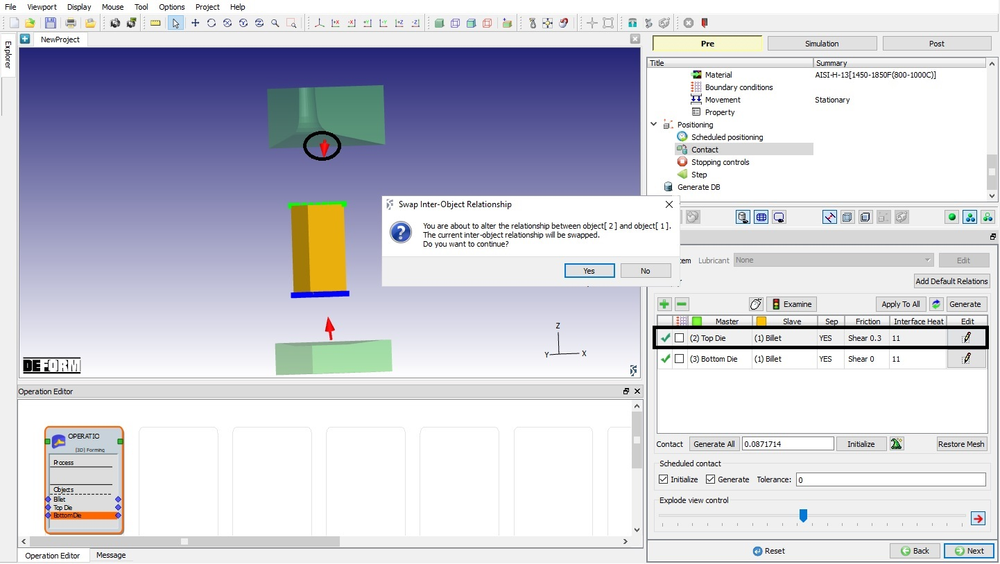
Clicking on Top die arrow button
When we click on “Yes” button in popup, then the arrow direction has been changed towards Top die from the Billet and in the relationship table “Top Die (Master) – Billet (slave)” relation has been swapped to “Billet (Master)
– Top Die (slave)” as shown in Fig. 20.9.
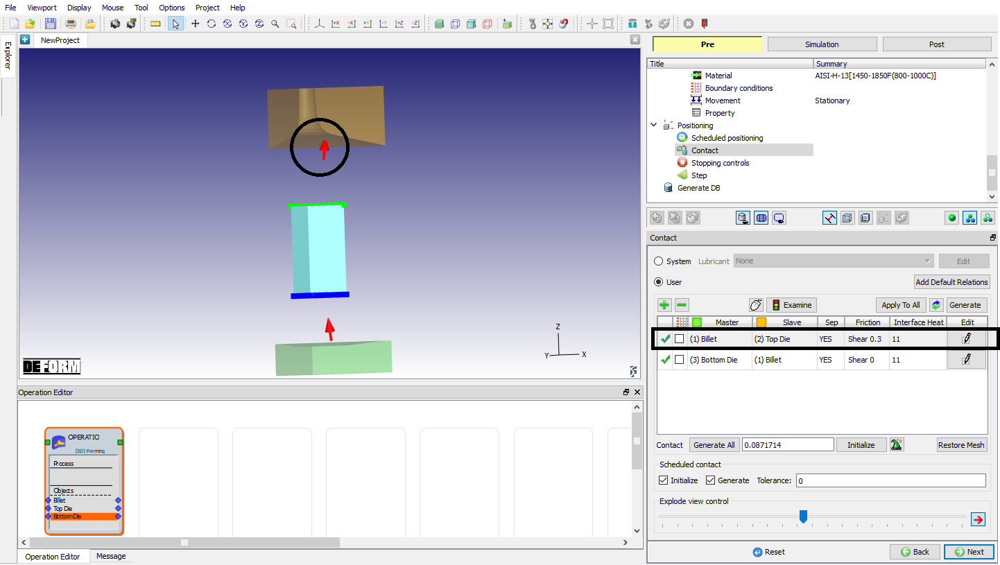
Inter object relation after swapping using arrow button.
In Inter - Object data definition windows we have:
-
Deformation Tab: Under Deformation tab allows the user to define Friction value, Contact criteria and Seperation criteria data. For more information related to Deformation tab option, refer 20.1. Friction and Contact criteria.
Related Topics:
20.1. Friction and Contact criteria
20.2. Interface Thermal Data
20.3. Interface Resisitivity
20.4. Tool Wear
20.5. Rigid Contact
Simulation modes selection
Environment process conditions settings
DEFORM object types
Contact Boundary condition
2D Tool Wear Lab
2D Inertia weld simulation